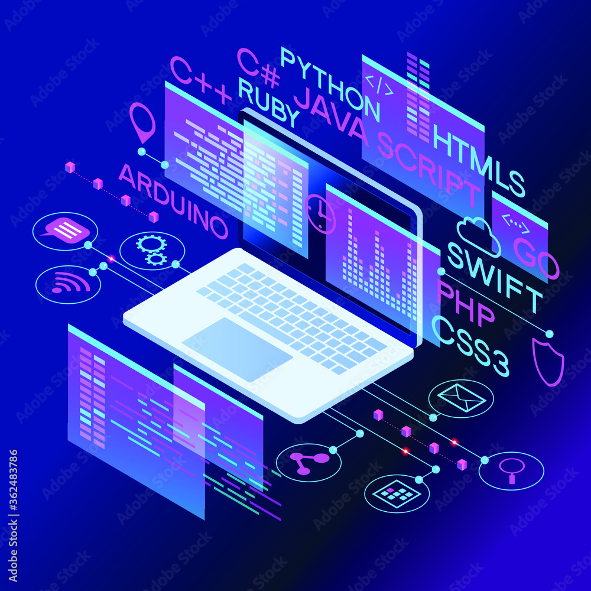

My journey of being introduced into the realm of tech started during the 2020 pandemic. At the time, I was studying at the University of Hawaii at West Oahu and majoring in Creative Media. I always enjoyed playing video games and dreamed of becoming some type of game developer growing up. I was more interested in the artistic style of games at the time, which allowed me to further enhance my skill set when taking animation courses at West Oahu. During the lockdown, however, I wanted to develop a new hobby or skill. A YouTube video on a coding challenge appeared in my recommended feed and as I watched it, I became amazed at how everything looked so sophisticated yet simple at the same time. When looking at code for the first time, blocks of code chunks seemed very structured and technical. This was a complete juxtaposition to what I was doing at the time, where ideas and inspiration for projects were more free-flowing, growing and fading in spurts. Despite these major differences, I was intrigued by thinking about art and animation from a different perspective. The critical-thinking aspect to solving problems naturally piqued my interest… and so my curiosity started to point towards coding.
Currently, as of right now, my interests still remain. I continue to enjoy the artistic side of animation and drawing styles of characters in video games. In addition to this, however, I am also interested in the relative fields of computer science. My main priority has therefore shifted into focusing on my software development skills. Though there is such a vast variety of areas that computer science revolves around, its interconnectedness allows me to still correlate several areas with my other hobbies of art and design. Some of the areas that I would like to explore more into depth include computer graphics, 3D modeling, and AI. Other areas that I find fascinating are data science and database management, since, for example, there are careers in those fields that relate to game development and statistics.
By taking this introduction course in software engineering (ICS 314), I hope to expand my knowledge in the principles of software development to understand what it actually is and how it works in practice. One of the things I’m eager to do is experience the process of working on larger-scale projects first hand. This can allow me to not only practice the technical skills needed for coding interviews, but also enable me to become more familiar with more technologies and frameworks. Furthermore, I seek to build upon my limited collaboration and communication skills when working in teams or other research projects. As I continue taking more ICS courses in the future, I would also like to improve my writing skills and develop other soft skills, such as establishing and maintaining an online presence, to better prepare for networking situations.
When looking down my path long-term, I’m not really sure of what I would like to do. I would like to work in a field that combines both of my interests in animation and software development, or at least something related to it. Perhaps I can work as a technical director for animation companies, a computer graphics designer for apps intended to enhance digital art, or maybe a front-end developer for video game industries. Nevertheless, with the rapidly-growing number of opportunities in the tech industry, the possibilities are limitless… I just hope to capitalize on them. With enough dedication, hard work, and a little bit of luck, I hope to one day get there.